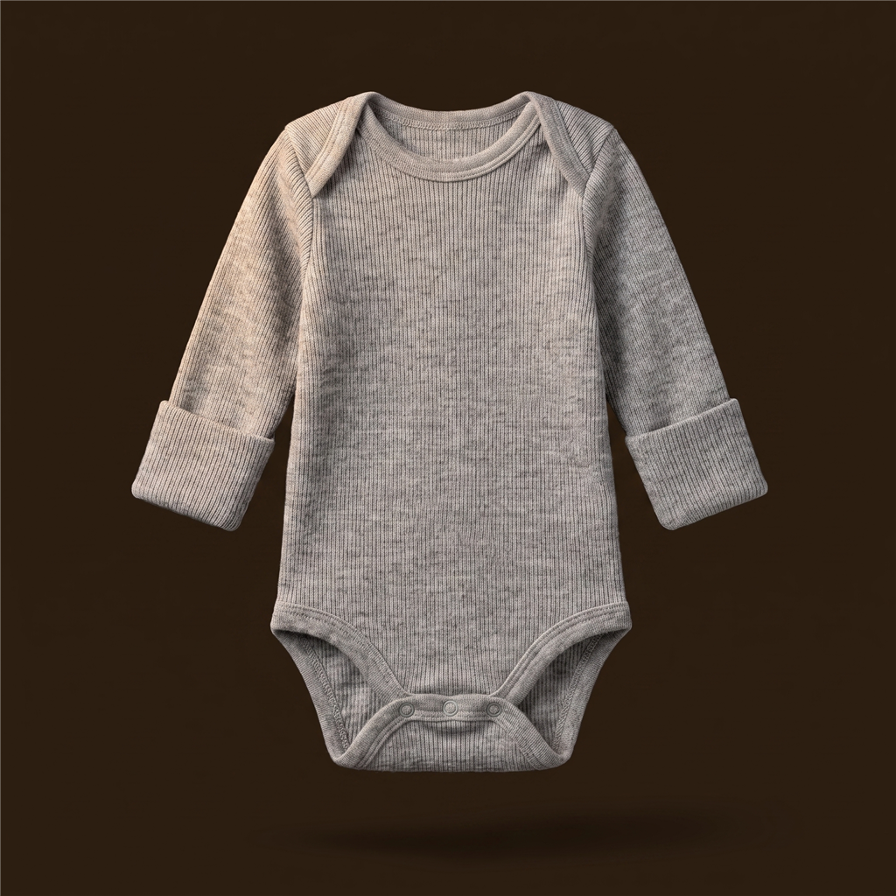
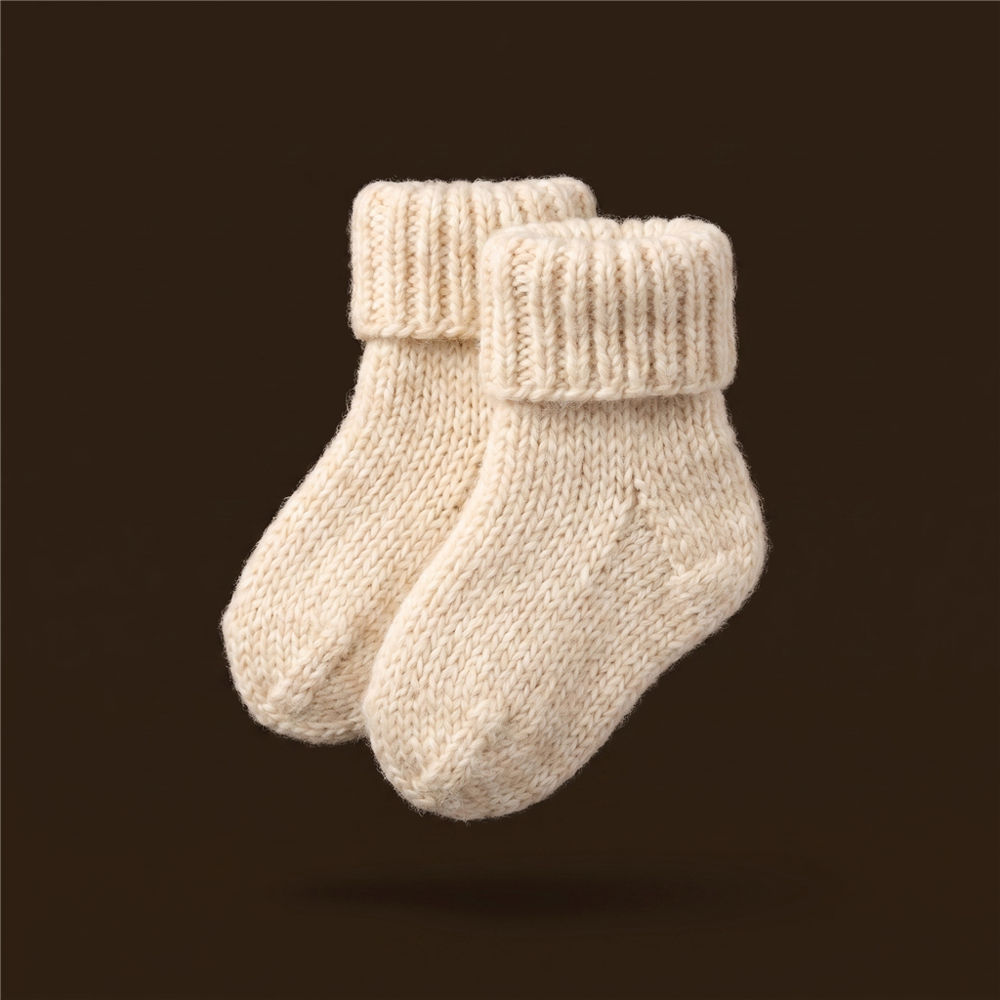
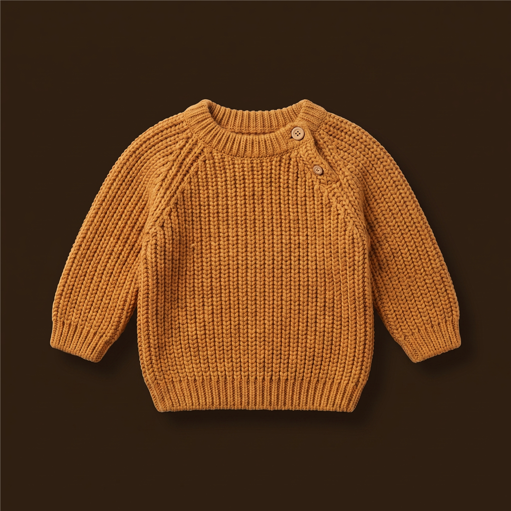
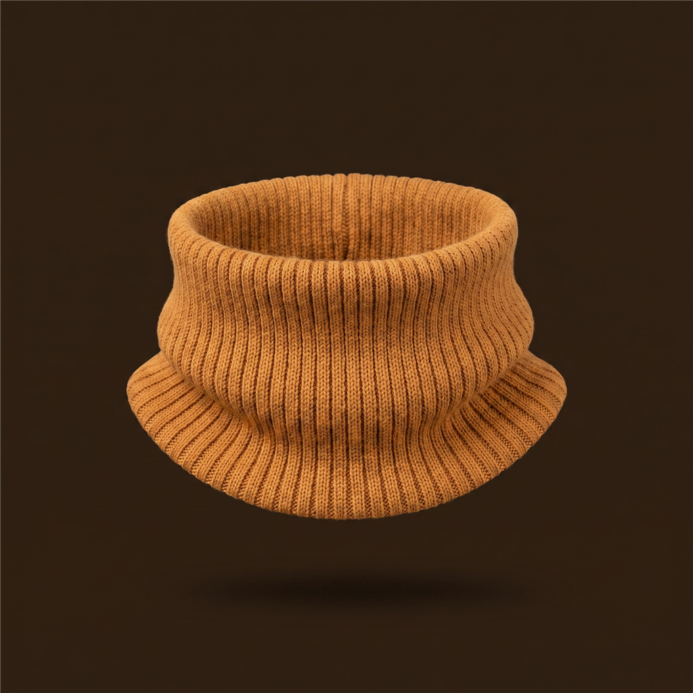
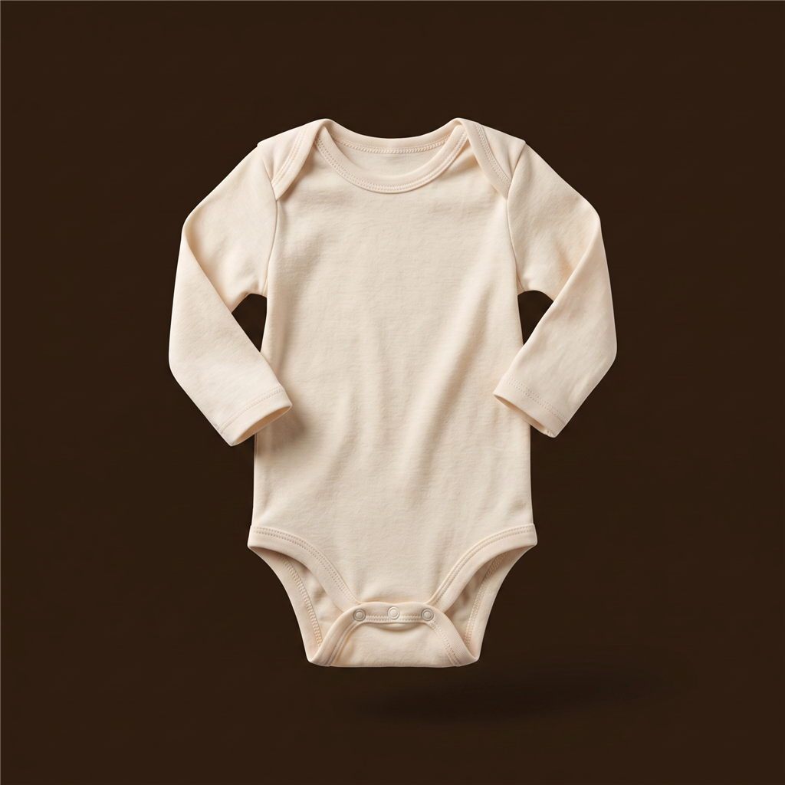

BABYORA
4°
Føles som 1° · Lett yr
Trondheim · Utenfor vogn
Juster
Dagens antrekk
5 lag i rekkefølge · 2 tilbehør
Innerst
1

Langermet ullbody
Fuktavvisende innerlag
Bytt
2

Ullsokker
Varme til føttene
Bytt
Mellomlag
3

Ullgenser
Isolerende lag
Bytt
Kle på, steg for steg
Hvorfor akkurat dette?
Hjem
Planlegg
Familie
Innerst · fuktavvisende lag
Bytt langermet ullbody
Langermet ullbody
Valgt nå
Tykt ullsett
Litt varmere

Ullhals, tynn
Tilsvarende varme
Kortermet ullbody
Litt kjøligere

Langermet bomullsbody
Mindre isolerende